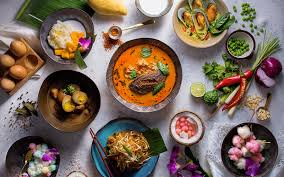

Why Thai Food?
The complex flavors, fresh ingredients, balance of flavors, cooking techniques, and cultural influence are what make Thai food so unbelievably mouth-watering. Whether you are a fan of spicy or mild dishes, Thai cuisine has something to offer everyone.
<-- Click on the links at the side to view the recipes!